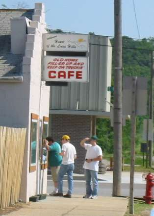
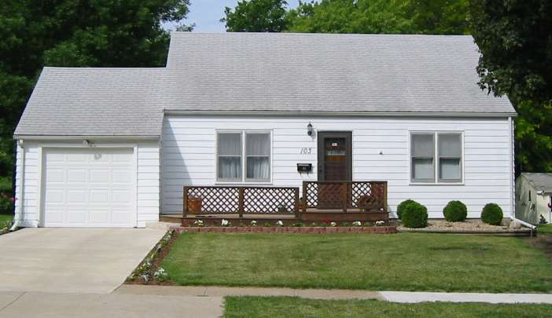
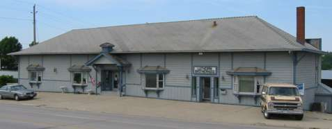
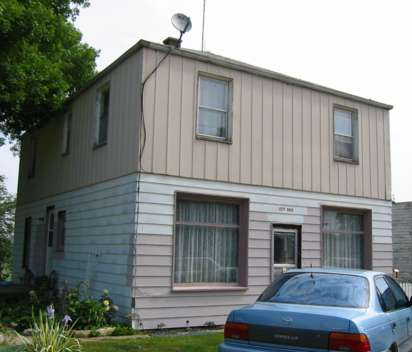
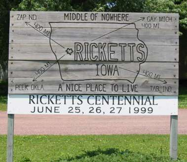
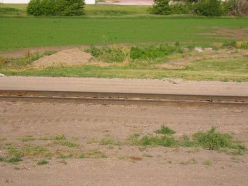
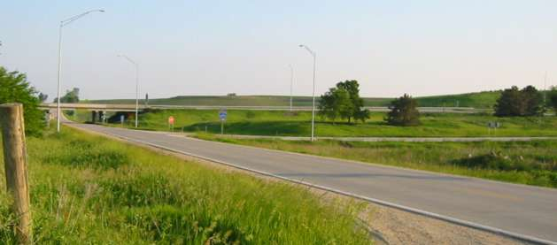

The Legend-News
What We Got Here in this edition of The Legend-News.
- Old Home Filler-Up For Sale Café
- C.W. McCall Tour 2002
- …and Other Events
- Song A’ Th’ Week: "I've Trucked All Over This Land".
Caution: this newsletter contains subtle humor. You have been warned.
Old Home Filler-Up For Sale Café
8 stools and a promise
For Sale: one small, slightly used diner/bar in Pisgah, Iowa. Display case of 1970s-era newspaper clippings included. Inquire at Century 21 Loess Hills, 712.642.4099.
T'aint no joke, folks. The Old Home Fill-er Up And Keep On Truckin' Café (that's what the sign says) on the northeast corner of Main and First, in Beautiful Downtown Pisgah, is up for sale. Even worse, it's closed.

Disbelieving tourists stare through the window of the shuttered cafe. Photo by Ed. Floden
The Café, a shrine to the many fans of poet/singer C.W. McCall (in reality, an advertising executive named Bill Fries), has apparently been on the market for at least four months, according to a "tip" that was published on the travel site Roadside America. [Ed.'s Note: if the text on that page seems awfully familiar, then read The Legend of C.W. McCall. We wonder if we should sue?]
The Café became famous in the 1970s, when it was used as the subject of several television commercials for the Old Home Bread brand of the Metz Baking Company. The commercials chronicled the life of trucker C.W. McCall and his romance with Mavis, a waitress at the fictitious "Old Home Filler-Up An' Keep On A-Truckin' Café" in Pisgah. Jim Finlayson and Jeanne Capps of Dallas protrayed the driver and his lady.
Hinckel's Café, which was the actual site used for the filming of the Café scenes, changed its name to match the diner of the commercials soon after the ads began to air in the area. The diner's subsequent owner changed its name to "Rains' Old Home Café", an appellation which does not appear on the establishment's current outdoor sign.
Local residents were stunned by the Café's closing, which was due to financial difficulties. A thirteen-year-old girl, who was working the cash register in the used appliance / clothing / antique store across the street from the Café, expressed amazement that she was living in a historic town. "Pisgah's famous?" she asked. "Who's C.W. McCall?"
Several older Pisgah residents, who were also present in the store (hours: Monday through Saturday, 9 to 5), recalled the days when the Old Home Café was the center of the town's life. One man even remembered that the used appliance store was the former site of the F.E. Miller Store, the local grocery and general goods store at which C.W. McCall purchased an engagement ring for Mavis.
The closed Café still contains a wall-mounted glass display case of newspaper clippings and photographs of the activities in the 1970s, when the Old Home Bread television commercials were filmed in Pisgah. Many Pisgah residents appeared as extras in those commercials; Leo Alton, an employee of the Highway Department, co-starred in several commercials as B.Q. McCall, the father of C.W.
Tourists who pass through Pisgah while "on the trail" of C.W. McCall have expressed dismay at the current lack of a rest stop in Pisgah. The Café was the only business of its type in town, and also the only place in town which had a liquor license. So now they can't get a cup of coffee, a soda, or a cold beer anywhere in town.
C.W. McCall Tour 2002
Asphalt is for wimps
Well, the Tour's over. Despite the less-than-capacity tour group (for some prospective attendees, life interfered with their plans) and a late-day blow-out that dropped one vehicle out of the trip, it was a success.
While you're waiting for us to set up a permanent section of the web site for the tale of the Tour, here are a few photographs of the places that we visited.

103 S. Leroy St., Audubon, where Bill Fries grew up. The aluminum siding is not from the 1930s. Photo by Ed. Floden

The site of the White House Café, in the 1940s. The White House was Bill Fries' inspiration for the Old Home Filler-Up An' Keep On A-Truckin' Café. Photo by Ed. Floden

The City Hall of Fiscus, population 10. Photo by Ed. Floden

Ricketts obviously realizes its place in the scheme of life. Photo by Ed. Floden

The railroad tracks of Persia. What else were you expecting? Photo by Ed. Floden

The Beebeetown ramp on I-680. Makes those railroad tracks look exciting, doesn't it? Photo by Ed. Floden

Chip Davis' gold record for Black Bear Road, in the offices of American Gramaphone. Photo by Ed. Floden
For a different view of the Tour, see the pictures on Busta's page.
…and Other Events
An excuse to put your pedal to the metal
The World's Largest Truck Convoy in Orlando, Florida, on July 20. Organized by ponsored by Norm Schneiderhan of the Orange County Sheriff, for the benefit of Special Olympics, this will be the largest gathering of rigs anywhere.
For more information, see the The World's Largest Truck Convoy web site; download this brochure ; or call Corporal Schneiderhan's office at 407.836.8675 (e-mail to norm.schneiderhan@ocfl.net; or contact the Special Olympics of Florida at 800.322.4376.
The Heartland Tour. The Collins family (Sean, Jackie, and their children David, Jonathan, Megan and Daniel) is raising money for the Cystic Fibrosis Foundation, and attempting to get an entry in the Guinness World Records, by traveling through the 48 contiguous States in the shortest possible distance. Their trip begins on June 26 and ends on July 14, and they'll be stopping at many Cracker Barrel restaurants along the way. Check out their schedule, and say "Hi!" if they're driving through your area.
Song A’ Th’ Week
Words without music. Call 'em poems.
For those of you who are planning your vacation for 2004, consider this as a plan. It makes Convoy seem short.
I've Trucked All Over This Land
(Bill Fries, Chip Davis)
From the album
Wolf Creek Pass
[Clap your hands and stomp your feet.]
Well, I've walked the line on 89
In the Arizona sun
I've chased the moon and I've caught a star
On U.S. one-oh-one
I've seen the sights from the Northern Lights
To the bend in the Rio Grande
I've took in a lot of this U.S.A.
'Cause I've trucked all over this land
[Start the banjo pickin'.]
Well, I've changed a tire by the light of a fire
On the rock-bound coast of Maine
I've shoveled snow up in Idaho
Been stuck on the Kansas plains
I've been to the end of the world and back
With a wheel and a stick in my hands
I've passed the test and I've done my best
I've trucked all over this land
[Chorus]
I've trucked all over this land
From Maine to the Rio Grande
I've paid the price of a truckin' life
But I've trucked all over this land
[Lots of banjo pickin' here.]
I've heard the wail of a gallopin' gale
On the road to the Florida Keys
I've felt the roar of a thunderstorm
On the Oklahoma seas
I've set my sail on the Oregon Trail
I've camped in a redwood stand
I've loved the best and I've hated the rest
But I've trucked all over this land
[Chorus]
I've trucked all over this land
From Maine to the Rio Grande
I've paid the price of a truckin' life
But I've trucked all over this land
[More banjo pickin' here.]
I've said a prayer as I climbed the stairs
On the Rocky Mountain side
I've learned the words and I've sung my song
And I've travelled far and wide
I've fought the fight and I've done all right
For the likes of a wanderin' man
I've paid the price of a truckin' life
But I've trucked all over this land
[Chorus]
Well, I've trucked all over this land
From Maine to the Rio Grande
I've paid the price of a truckin' life
But I've trucked all over this land
Yeah I've trucked all over this land
From Maine to the Rio Grande
I've paid the price of a truckin' life
But I've trucked all over this land
Next Issue
More about C.W. McCall Tour 2002, and a few odds and ends.
The Legend-News is published fortnightly — unless the fortnight is the fifth Monday, in which case it's published fortnightly-and-a-half — by TechRen Enterprises, by the shores of Gitche Gumee. Contents Copyright 2002 TechRen Enterprises, except for anything that we borrowed from someone else. Thanks to Bill Fries and Chip Davis for the words and music, and thanks to a Large Multinational Record Company That We Can't Name Because They Might Notice Us for not suing our pants off. This quote intentionally blank.